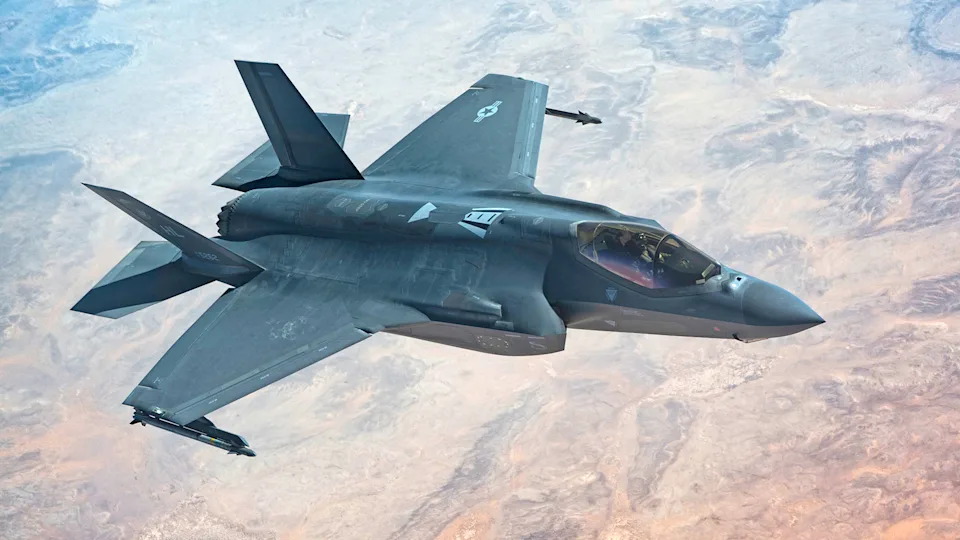

Stíhačka 5. generace
F-35 Lightning II
Multirole stealth stíhačka Lockheed Martin. Tři varianty: CTOL, STOVL a palubní. Operuje u 18 zemí NATO.
- - Stealth technologie (RCS < 0,001 m²)
- - 1 960 km/h (Mach 1,6)
- - AN/APG-81 AESA radar